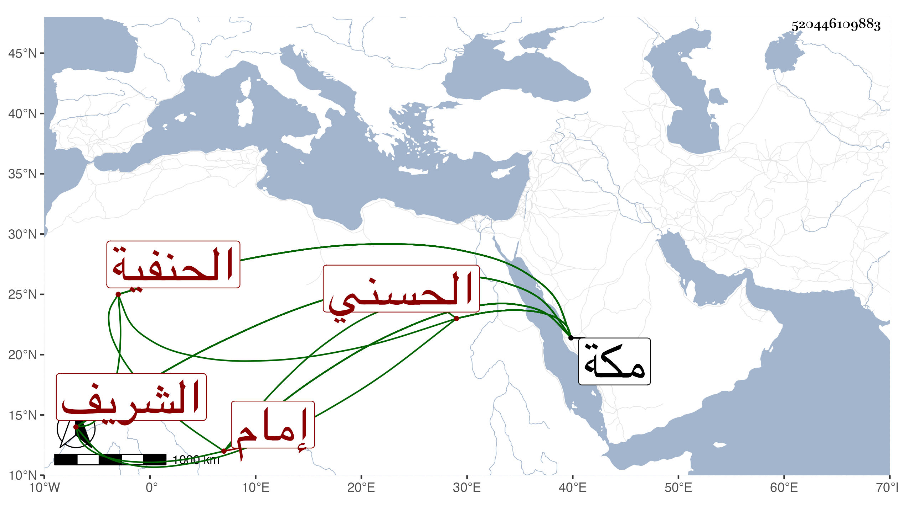

0902Sakhawi.DawLamic.ITO20230111-ara1.EIS1600.520446109883
Biography ID: 520446109883
551
الشريف ابن أخي المحيريق الكمال عبد اللطيف بن علي بن أحمد وأخوه بهاء الدين وابن أولهما أحمد والبخاري إمام الحنفية بمكة محمد بن محمد بن محمد بن السيد والجرواني صاحب الوراقة محمد بن عبد الله بن عبد المنعم الحسني وحفيده محمد بن أحمد النقيب وترجم شيخنا في سنة ثلاث عشرة محمد بن أحمد والحلبي الحنبلي رضي الدين محمد بن محمد بن علي ابن هاشم والحنفي شيخ الجوهرية هو المحب محمد بن عبد الرحمن . والحنفي شيخ القجماسية هو الشمس محمد بن علي بن محمد والحنفي الدمشقي إبرهيم بن علي بن إبرهيم بن محمد ممن أخذ عني بمكة في سنة أربع وتسعين شرحي للتقريب وغيره ورفيق لابن الهمام أعجمي مات في ربيع الأول سنة إحدى وستين بمكة أرخه ابن فهد والسمهودي صهر المناوي يأتي ذكره في الصاد قريبا وكذا صهر قاوان والطباطبي إبرهيم بن أحمد بن عبد الكافي والعجمي المقيم برياط السدرة من مكة مات في شوال سنة سبع وخمسين أرخه ابن فهد والفرضي علي بن عبد القادر . والقبيباتي إبرهيم بن محمد بن أحمد بن محمد وكاتب السر أحمد بن علي بن إبرهيم الحسيني الدمشقي والكردي علي بن محمود بن محمد بن أبي بكر وأخوه محمد والمغربي شيخ تربة خشقدم سبق في الحداد من هذا الفصل والنسابة الحسن بن محمد ابن أيوب وعمه الحسن بن محمد ونقيب الأشراف هو العلاء علي بن محمد بن أبي بكر الحسيني الدمشقي الحنفي ممن جاور بمكة مدة .
